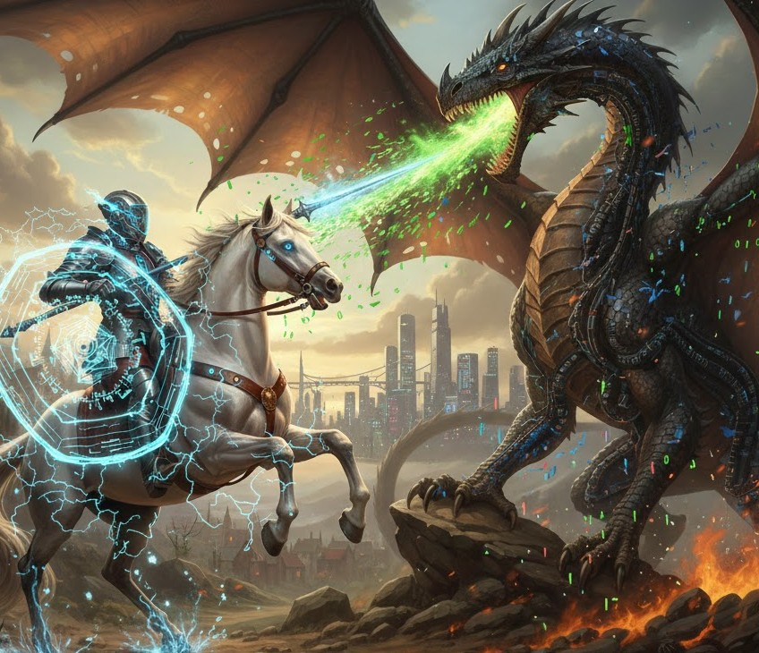

In 2024, after completing my MSc in Computer Science and Cybersecurity I decided to pursue the OSCP. My MsC provided the theoretical foundation. OSCP was the crucible that tested my practical endurance.
I started with IT familiarity.
I find it slightly difficult to recommend the best path for others. Enjoy the journey and the certifications will come. It is less about a single resource and consistently doing something each day and practicing specific skills.
I purchase the 90 day bundle which included 1 exam attempt. I balanced my full-time cybersecurity role and learning with labs, I studied the course material and worked through the practice labs
Failed at first. I thought it best not to stress too much. I would study harder and return for another try. Overall the cooling-off period helped me improve.
I started around midday. I would hack for 2-3 hours and then take short 15 minute breaks. Those helped alot to breathe, drink water and think.
• Fully completed AD Set: Completed all AD flags by the 4th hour.
• Rooted 1st standalone: Completed this by the 6th hour.
• Foothold on 2nd standalone: Foothold flag by the 9th hour
I had earned enough points to pass, so I began taking vigorous screenshots and building my report notes and went to sleep.
I had earned over the requirement. I double and triple checked my notes, screenshots, control panel submissions and ended the exam.
I had already written my report during the exam. It was a matter of putting it onto the official template. This did take me a while to double and triple check. Submitted the report I submitted about 14 hours after the exam ended Waited...: then suddenly, success!
STATUS: OFFSEC CERTIFIED PROFESSIONAL
